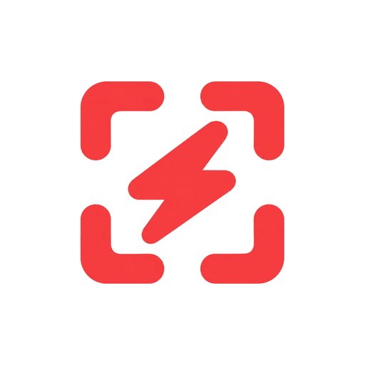
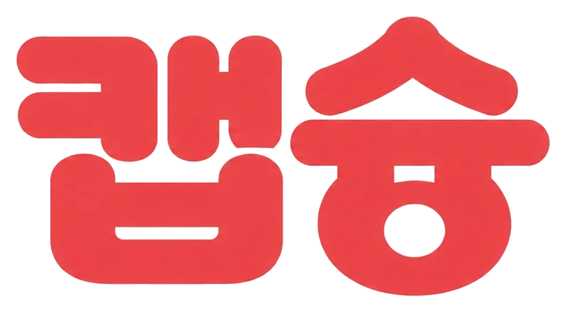
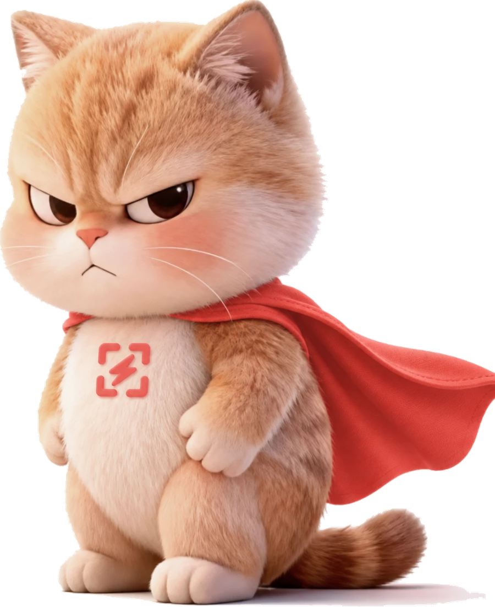

단축키 한 번으로 부분·창·동영상 캡쳐. 캡쳐한 이미지에 바로 마킹하고, 원하는 폴더에 저장하고, 클립보드로 어디든 붙여넣으세요.
⌘1 부분 · ⌘2 동영상 · ⌘3 창. 어느 앱에 있든 눌러서 바로 캡쳐. (손쉬운 사용 권한 불필요)
캡쳐 직후 펜·형광펜·사각형·화살표로 표시. 5색 지원, 원본 해상도로 저장·복사됩니다.
저장 창에서 폴더를 그때그때 지정. 기본 폴더·자동 저장도 메뉴바에서 설정.
이미지 속 글자를 OCR로 추출하고 한↔영 번역까지. 그대로 텍스트 복사.
캡쳐가 곧바로 클립보드에. 포토샵 등 외부 앱에 ⌘V로 바로 붙여넣기.
영역 지정 후 화면 녹화. ffmpeg가 있으면 mp4, 없으면 mov로 저장.
Apple 개발자 서명이 없는 개인 배포용이라, 첫 실행 때 macOS가 경고를 보여줍니다. 아래 순서대로 하면 됩니다.
“열지 않음” 경고가 뜨면 일단 완료를 누르세요. (정상입니다)
macOS 15(Sequoia)부터는 ‘우클릭 → 열기’가 막혀서, 이 여전히 열기를 눌러야 합니다. 암호를 입력하세요.
~/Applications에 설치되고 앱이 자동 실행됩니다. 메뉴바에 캡슝 아이콘이 나타나요.
허용 후 안내가 나오면 앱을 한 번 껐다 켜세요. 이후로는 계속 유지됩니다.